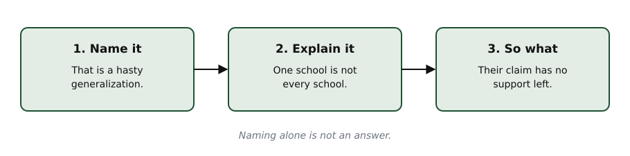

Chapter 7: Reasoning and Fallacies
In this chapter
Move: Answer. Builds on: Chapters 2 and 4. Where you use it: testing your own warrants before a debate, and answering your opponent's during one.
Objectives
By the end of this chapter you should be able to:
- Identify five patterns of reasoning and the test question for each.
- Define a fallacy and explain why a fallacious argument is not automatically false.
- Recognize eleven common fallacies and explain what goes wrong in each.
- Call out a fallacy in a debate by naming it, explaining it and saying what it does to the argument.
- Check your own case for fallacies before your opponent does.
Key terms
Reasoning, reasoning by example, causal reasoning, reasoning by analogy, sign reasoning, reasoning from authority, fallacy, appeal to authority, appeal to popularity, appeal to tradition, ad hominem, red herring, straw man, hasty generalization, no true Scotsman, false analogy, slippery slope, false dilemma.
The idea
7.1 Reasoning is the bridge
Chapter 2 showed that the weakest part of most arguments is the warrant, the connection between the evidence and the claim. Reasoning is the process of drawing that connection: moving from what you know to what you conclude. Every warrant uses some kind of reasoning, usually without saying which kind.
That matters in a debate because each kind of reasoning has its own way of failing. If you know which kind an argument uses, you know which question to ask, and the question often finds the flaw. This chapter first names five common patterns of reasoning and their tests, then looks at fallacies, the common ways reasoning goes wrong.
7.2 Five patterns of reasoning
To compare the patterns, we will use one claim throughout: a debater argues that a community college's new drop-in tutoring center is raising pass rates in its math courses. (The example is hypothetical.) There are at least five ways to support that claim, and each one can be tested differently.
Reasoning by example draws a general conclusion from specific cases. The debater says: "Pass rates went up in Algebra, Statistics and Calculus this year, the first year the center was open." Three cases support a general claim about math courses. The test question is: are there enough examples, and are they typical? Three courses out of three is persuasive. Three hand-picked courses out of twelve, with the other nine unchanged, is not. Reasoning by example is the basis of most research, since a study is a large, carefully chosen set of examples, and it is also the pattern behind the most common fallacy in this chapter, the hasty generalization.
Causal reasoning argues that one thing produces another. The debater says: "Students who used the center passed at higher rates, because tutoring helps them catch mistakes before exams." The test question is: is this the real cause, and the only one? Maybe the students who chose to use the center were already the most motivated, and would have passed anyway. Maybe the department changed textbooks the same year. Two things happening together does not prove that one caused the other. Causal reasoning is the backbone of policy debate, where every link and internal link is a causal claim, so learning to test it now pays off in Part V.
Reasoning by analogy argues that because two cases are alike in important ways, what is true of one is true of the other. The debater says: "A nearby college opened a similar center three years ago, and its math pass rates rose. Ours will too." The test question is: are the two cases alike in the ways that matter for this conclusion? If the other college also hired more instructors that year, or serves a very different group of students, the analogy weakens. Analogies are persuasive because they make something unfamiliar feel familiar, which is also what makes a weak one dangerous.
Sign reasoning argues that one thing is evidence that another exists, without claiming one causes the other. The debater says: "The center is packed every afternoon before midterms, which shows students find it useful." A full room is a sign of use, the way smoke is a sign of fire. The test question is: is the sign reliable, or could it point to something else? A packed center could mean it is useful, or that it is the only quiet room on campus with outlets.
Reasoning from authority argues that a claim is true because a qualified source says so. The debater says: "The college's institutional research office concluded the center raised pass rates." Most debate evidence works this way: you read what an expert found because you cannot run the study yourself. The test question is: is this source an expert on this question, and in a position to know? An institutional research office studying its own campus qualifies. A celebrity's opinion about tutoring does not. Chapter 8 covers how to judge sources in detail.
At a glance
| Pattern | How it works | Test question |
|---|---|---|
| Reasoning by example | Specific cases support a general conclusion | Are there enough examples, and are they typical? |
| Causal reasoning | One thing produces another | Is this the real cause, and the only one? |
| Reasoning by analogy | Two cases alike in key ways share an outcome | Are the cases alike in the ways that matter? |
| Sign reasoning | One thing indicates another exists | Is the sign reliable, or could it mean something else? |
| Reasoning from authority | A qualified source says it is so | Is the source an expert on this question and in a position to know? |
7.3 What a fallacy is
A fallacy is the use of invalid or otherwise faulty reasoning in the construction of an argument. Fallacies have two qualities worth remembering.
First, they are deceptive. A fallacy usually looks like good reasoning at first glance, which is why it works on audiences and why it is worth learning to spot. Nobody is persuaded by reasoning that looks broken.
Second, a fallacious argument is not necessarily false. It is bad reasoning, not a wrong conclusion. "Everyone I know thinks the earth orbits the sun, so it does" is a fallacy (an appeal to popularity) with a true conclusion. This matters in a debate. Showing that your opponent's reasoning is fallacious removes their support for a claim. It does not prove the opposite claim. Treating it as if it did is itself a mistake, sometimes called the fallacy fallacy.
7.4 Eleven common fallacies
The eleven fallacies below fall into three families. Some bring in something irrelevant to the claim. Some draw too large a conclusion from too little evidence. Some build a false picture of the choices or consequences.
Fallacies of relevance
An ad hominem (Latin for "to the person") attacks the person making an argument instead of the argument. "Don't listen to my opponent's plan to lower tuition. He failed college algebra twice." His grade has nothing to do with whether the plan would work. In a debate, ad hominem attacks also cost you with judges, who expect you to engage the argument and often penalize personal attacks in speaker points.
A red herring is a distraction that pulls attention from the argument at hand, whether the distraction is intentional or not, true or false. A professor asks why an essay is three days late, and the student answers that the parking lot is full every day. The parking lot may well be full. It is not the answer to the question. In a debate, a red herring often appears as a long answer to an argument nobody made, and the fix is to bring the judge back to the question that was actually asked.
A straw man replaces an opponent's actual position with a distorted or exaggerated version that is easier to beat. Your opponent argues that students need less homework, and you respond that they want to eliminate homework, exams and attendance. You have beaten an argument nobody made. Straw men are easy to catch in a debate because the judge has the real argument on the flow. When you answer, quote your opponent's actual words first.
An appeal to popularity (sometimes called ad populum) claims something is true because many people believe it. "Millions of people believe in astrology, so it must work." How many people believe a claim tells you about public opinion, not about whether the claim is true. Polls can be good evidence for a claim about what people think; they are poor evidence for anything else.
An appeal to tradition claims something is right because it has been done that way for a long time. "Bloodletting is one of the oldest medical treatments, so it is tried and true." Age shows that a practice has survived, not that it works. In policy debates, the negative often defends the status quo, and it should defend it by showing it works, not only that it is familiar.
An appeal to authority claims something is true because an authority says so, when the authority is not an expert on the question or when the authority is the only support offered. This one needs care, because debate evidence depends on experts, and reasoning from authority is often good reasoning. The fallacy happens in two situations. The first is a source speaking outside its expertise: a famous physicist's opinion about the economy is not expert evidence about the economy. The second is treating "an expert said so" as the end of the discussion when the expert's own reasons are available and weak, or when other experts disagree. The fix is to ask what the expert found and why.
Fallacies of weak evidence
A hasty generalization draws a broad conclusion from evidence that is too small or too unrepresentative to support it. "My dad smoked two packs a day and lived to 90, so smoking can't be that bad for you." One case cannot outweigh studies of millions. This is reasoning by example that fails its test question, and it is probably the fallacy you will see most often in debates, usually as one vivid story offered as proof of a trend.
The no true Scotsman fallacy protects a generalization from a counterexample by redefining the group. A: "No college student actually likes 8 a.m. classes." B: "I'm a college student, and I love my 8 a.m." A: "Well, no real college student would pick an 8 a.m." Instead of giving up the generalization, A quietly changes its meaning so no counterexample can count. In a debate it often shows up when a definition shifts mid-round to dodge an answer. Point back to the original definition on the flow.
A false analogy claims that because two things are alike in one way, they must be alike in another way that does not follow. "A college is like a business, so it should cut any class that does not make a profit." Colleges and businesses share some features, like budgets, but a college's purpose is not profit, so the comparison breaks down at the exact point the conclusion depends on. This is reasoning by analogy that fails its test question.
Fallacies of false choices and consequences
A slippery slope claims that one step will lead through a chain of events to an extreme outcome, without showing why each step follows. "If we let students use calculators on one quiz, soon nobody will learn arithmetic, and engineering degrees will be worthless." Each link might be possible, but none is shown. Not every chain argument is a slippery slope. A policy disadvantage is also a chain, and it is legitimate when every link has evidence. The fallacy is in skipping the proof, not in having a chain.
A false dilemma (or false dichotomy) presents two options as the only ones when more exist. "Either you transfer to a UC or you've wasted your life." Students transfer to many kinds of schools, enter careers directly, or go back later. In a debate, a false dilemma often hides in a framing like "either we pass this plan or the problem gets worse." The answer is to name the third option.
At a glance
| Fallacy | What goes wrong | Example |
|---|---|---|
| Ad hominem | Attacks the person, not the argument | "He failed algebra, so ignore his tuition plan." |
| Red herring | Distracts from the question | Answering a late essay with the parking problem |
| Straw man | Answers a distorted version of the argument | "Less homework" becomes "no homework, exams or class." |
| Appeal to popularity | Many believe it, so it is true | "Millions believe in astrology." |
| Appeal to tradition | Long-standing, so it is right | "Bloodletting is tried and true." |
| Appeal to authority | A source outside its expertise, or "an expert said so" as the only support | A physicist's opinion offered as proof about the economy |
| Hasty generalization | Too little or unrepresentative evidence | "My dad smoked and lived to 90." |
| No true Scotsman | Redefines a group to dodge a counterexample | "No real college student likes 8 a.m. classes." |
| False analogy | Alike in one way, assumed alike in another | "A college is a business, so cut unprofitable classes." |
| Slippery slope | An unproven chain to an extreme outcome | Calculators on one quiz lead to worthless degrees. |
| False dilemma | Only two options offered when more exist | "Transfer to a UC or you've wasted your life." |
7.5 Calling one out in a debate
Spotting a fallacy is half the job. The other half is answering it in a way a judge will credit, and that takes three moves.

First, name it. "That's a hasty generalization." Naming the flaw tells the judge what kind of problem you are about to show and makes your answer easy to flow.
Second, explain it. Show the judge where the reasoning breaks, in terms of this argument: "Their only evidence is one study at one school, and the resolution is about community colleges nationwide." This is the step beginning debaters skip, and it is the step that wins the argument. A judge who has never heard the term "hasty generalization" can still follow the explanation. A judge who only hears the label has been given a word, not a reason.
Third, say so what. Tell the judge what the flaw does to the argument and the debate: "That means their first contention has no support left, so the only evidence on this question is ours." This is Chapter 4's "That means..." step, and it connects your answer to the decision.
Two cautions. Do not overuse fallacy names. A debater who calls everything a fallacy sounds like they are reciting a list, and many weak arguments are better answered with counter-evidence than with a label. And remember section 7.3: proving that an argument is fallacious removes its support, but it does not prove the opposite. If you need the judge to believe the opposite, you still need your own evidence.
Finally, use this chapter on yourself first. Before a debate, read each of your warrants and ask its test question from section 7.2. Any fallacy your opponent could find, you can find first, and fix.
Say it
- Name and explain: "That's a hasty generalization. One student's story is not evidence about all students."
- Test a cause: "They've shown the two happened together, not that one caused the other."
- Answer a straw man: "That's not our argument. What we said was..."
- Break a false dilemma: "There's a third option they've ignored."
- Close the answer: "That means their contention has no support left."
Worked examples
A personal decision
Resolution: Starting at a community college costs less than starting at a four-year university.
The negative's counter-contention says: "My older sister started at a community college, lost a whole semester of credits when she transferred, and ended up paying more. Starting at a community college costs more." That is a hasty generalization: one transfer story offered as proof about all students. The affirmative names it, explains that one case cannot show how often credits are lost, and points out that the negative has no evidence about transfer outcomes in general. The so-what: the counter-contention has no support, so the affirmative's tuition evidence is the only evidence about cost on the flow.
Notice what the affirmative did not say. It did not claim credits are never lost. The sister's story may be true, and a negative with real data about lost credits could make the argument well. The fallacy is in the jump from one case to a general claim.
A global prediction
Resolution: Artificial intelligence will cause more job creation than job displacement.
The negative argues: "Polls show most people are worried AI will take their jobs, so AI will destroy more jobs than it creates." That is an appeal to popularity. What people fear is evidence about public opinion, not about labor markets. The affirmative also hears a false dilemma in the negative's summary ("either AI replaces workers or it's useless to employers") and names the third option the affirmative's own evidence describes: AI that changes what workers do without replacing them.
The negative has a fallacy to call out too. The affirmative's second contention says that because past technologies created more work than they destroyed, AI will as well. The negative argues this is a weak analogy: earlier technologies automated physical or routine tasks, while AI can perform some of the judgment-based tasks that new jobs were built around. That is an argument about whether the cases are alike in the ways that matter, which is exactly the test question for reasoning by analogy. Whether it wins depends on which side explains the comparison better.
How a judge weighs it
Judges do not award points for naming fallacies. They credit what the explanation does to the argument. A clearly explained flaw in a warrant can remove a contention from the debate; an unexplained label usually changes nothing. Judges also notice when a debater uses a fallacy themselves, especially a straw man, because the real argument is on the judge's flow for comparison.
Common mistakes
- Naming without explaining. "That's a slippery slope" is a label, not an answer.
- Treating a fallacy as proof of the opposite. Bad reasoning for a claim does not make the claim false.
- Calling all expert evidence an appeal to authority. The fallacy is a source outside its expertise, or "an expert said so" with nothing behind it.
- Calling every chain a slippery slope. A chain with evidence for every link is a legitimate argument.
- Answering with a straw man. Quote your opponent's actual argument before you answer it.
Practice
Drill: fallacy flag (15 minutes, small groups). One student reads a short argument aloud, built around one of the eleven fallacies. The first student to name the fallacy must then explain where the reasoning breaks and say what it does to the argument. A name without the explanation and the so-what earns no point. Rotate readers.
Writing exercise. Find an argument in a news article, opinion piece or social media post that commits one of the fallacies in this chapter. In 200 words, identify the fallacy, explain where the reasoning breaks, and rewrite the argument so it uses sound reasoning instead.
Check questions
Choose an answer to see feedback. Nothing is recorded.
1. "Students who used the tutoring center passed at higher rates, so the center caused the higher pass rates." Which test question finds the weakness?
2. Which statement about fallacies is true?
3. Your opponent argues for less homework. You respond that they want to abolish homework, exams and attendance. What have you committed?
4. When is citing an expert an appeal to authority fallacy?
5. You spot a hasty generalization. What is the strongest way to answer it in a debate?